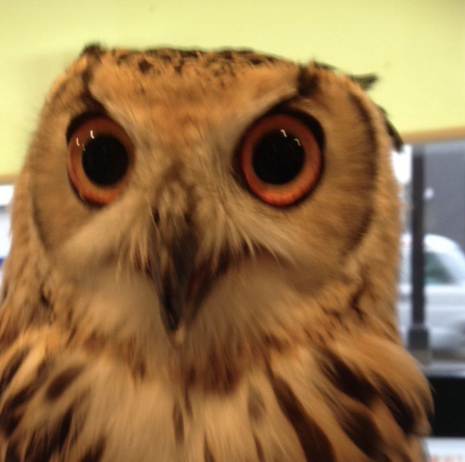

2024 me decided to make an personal website (sound too fancy for me still) just because I do not like how society are pressuing to make Linkedin, Resume and Facebook. I feel wired making those feel as if I am presenting myself as comoddity in this capilatistc world. It probably navie to think like this but at least it gave me incentive to make this as place to show who I am in a way I want
A brief description of your first project.
A brief description of your second project.
A brief description of your third project.
You can reach me at: your-email@example.com